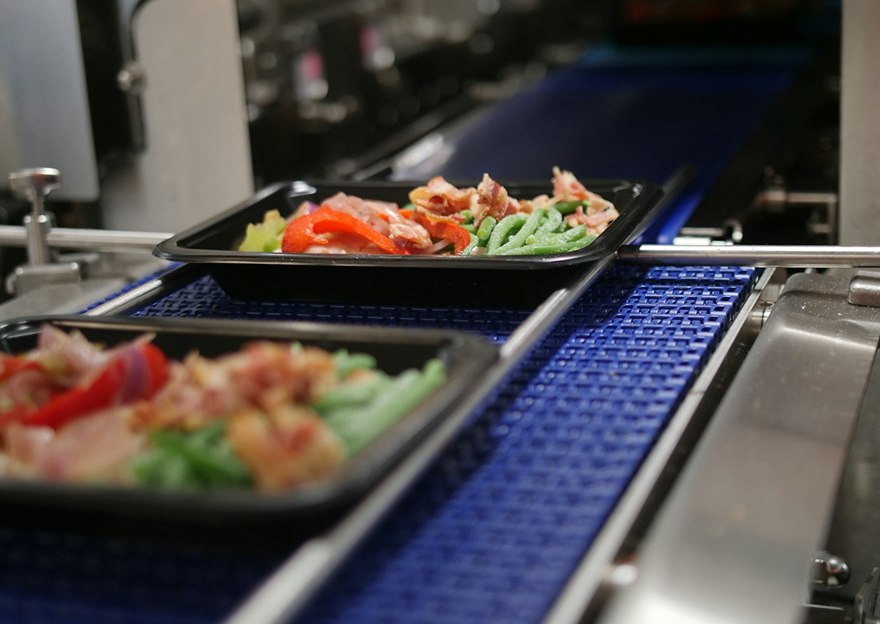

지속가능경영
지속가능경영
SUSTAINABILITY MANAGEMENT사회적경영
SOCIAL MANAGEMENT AREAS 사회적 책임경영 핵심영역
인권과 안전을 최우선 가치로 삼고 상생과 사회적 책임을 실천하여 지속가능한 사회를 만들어갑니다.
-
01
diversity_4
PEOPLE
성별, 세대, 학벌, 지역, 장애유무 등에 따른 차별을
금지하고 다양성을 존중합니다. -
02
verified_user
SAFETY
회사의 자산을 효율적으로 운영하고 주주와 투자자의
정당한 권리와 이익을 보호합니다. -
03
chess_knight
경쟁사·협력업체에 대한 자세
경쟁사와 정당하게 경쟁하고 협력회사와 공평한 기회와
공정한 거래를 통해 공존공영합니다. -
04
balance
임직원에 대한 책임
임직원의 인간존엄성을 존중하고 자유롭고 안전한
근무환경을 조성하며 공정하게 대우합니다. -
05
policy
임직원의 기본윤리
사조대림인으로서 올바른 윤리관을 확립하고
정직·성실·공정·투명을 바탕으로 직무를 수행합니다. -
06
psychiatry
사회에 대한 책임
건실한 기업시민으로 성장하여 국가와 사회 발전에
공헌하고 자연과 깨끗한 환경을 보호합니다.
PEOPLE & DIVERSITY다양성을 존중하는
포용적 조직문화
이해관계자에 대한 책임을 분명한 행동
기준으로 실천합니다.
-
2025 총 인원
1,315명
남성 68% · 여성 32% -
시니어 근로자
1.96%
2028 목표 2.70% -
장애인 고용률
3.11%
2025 법정 의무고용률
3.10% 상회
-
01
차별금지
성별, 세대, 학벌, 지역, 장애유무 등에 따른 차별을 원천적으로 금지하고 상호 존중 문화를 강화합니다.
-
02
시니어 근무자 확대
축적된 기술과 노하우를 가진 경력자가 계속 근로할 수 있도록 시니어 근무자 제도를 확대 운영합니다.
-
03
장애인 일자리 창출
장애인 운동선수 직접고용과 체육활동 후원, 적재적소 배치를 통해 고용과 역량 발휘를 지원합니다.
CORE STRATEGY기후위기 대응을 위한 핵심 전략
-
01. PREVENTION
유해·위험요인 사전 발굴
정기적인 교육과 커뮤니케이션을 통해 윤리의식을 조직문화로 정착시킵니다.
-
02. GOVERNANCE
전담조직 중심 거버넌스
대표이사 직속 사업안전관리실과 각사업장 안전보건부서가 전사 정책을 실행합니다
-
03. PARTICIPATION
노사·협력사 공동 참여
산업안전보건위원회와 안전보건협의체를 통해 현장의 위험과 예방대책을 함께 논의합니다.
-
04. SYSTEM
ISO 45001 운영
인천·칠서·영천·부산·안산 5개공장에 국제표준 안전보건경영시스템을 적용합니다.
- 161건 2025 위험요인 발굴
- 150건 개선 완료
- 93% 위험요인 개선율
SAFETY MANAGEMENT안전보건을 최우선으로

지역과 함께 성장합니다.
지역관청과 푸드뱅크, 복지기관 등과 연계하여 사회적 약자를 위한 생활식료품을
지원하고, 문화·예술·스포츠 및 친환경 사회공헌까지 활동의 범위를 넓혀갑니다.